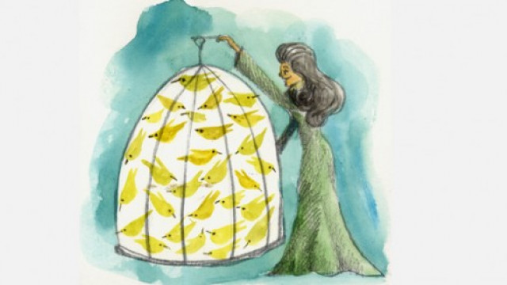

Bio
Amaranta Ursula is the younger daughter of Jose Aureliano Segundo and Fernanda. Aureliano Segundo her father is very keen to send her to foreign schools for a good education. She leaves for Brussels to study with the help of her father. She finishes her studies there and marries Gaston. She decides to come back home after sometime.
When Amaranta comes back home Jose Arcadio her brother was already dead. The house was in ruins, she doesn't like it and says "it's obvious that there's no woman in this house." She take care of the house like her great great grand-mother Ursula did. She restored the house back to perfection. She scattered the ants, fixed the doors and windows, filled the cracks in the floor and uprooted weeds from the garden.

Name: Amaranta Ursula Father: Aureliano Segundo Mother: Fernanda del Carpio Cause of Death: Postpartum hemorrhage Lover: Aureliano Babilonia Spouse: Gaston Generation: Fifth Children: Aureliano Resembles: Ursula Iguaran
Relationship with Aureliano Jose
Aureliano (Babilonia) is Amaranta Ursula's sister's (Renata Remedios Meme's) son with Mauricio Babilonia. Fernanda did not accept Aureliano as her grandson and angry with Meme's relationship with Mauricio Babilonia, she sent her away and denied her grandson to move out of the house. When Amaranta Ursula returns, she finds him alone in the house and meanwhile living with him alone she develops affection for him and Aureliano also develops love for Amaranta Ursula, much like in the past with Amaranta and Aureliano Jose. They make love numerous times Amaranta Ursula gets pregnant. Aureliano Jose Wants the child and names him Aureliano on his birth. Though the child did not survive. Also the child was born with the pig's tale, so the ancient fear of the Buendia Family (see Ursula's Fear) comes to a reality.
Death
Amaranta Ursula dies after giving birth to her son, due to Postpartum hemorrhage. She gives birth to a child with a tail of pig. She seems happy but Aureliano and the nurse could not get to stop the bleeding after the birth and in this way she dies. Aureliano becomes man after her death and leaves his son alone in basket which Amaranta made for her child, and ants eat his son to death.